Mantelier · Lookbook
Mantelier connects remarkable restaurants, hotels and one-off evenings with the people who travel for them. These are real screens from the app, filled the way we expect it to look once venues have added their own photos, stories and events.
An illustration, not a listing. Every venue, event, person, award and score on this page is invented, and the photos are stock images. The screens themselves are the app as it is built today.
Discover
Explore opens on what is worth planning for. Your photo is the first thing a member sees, on a calm page with no ratings or adverts competing for attention.
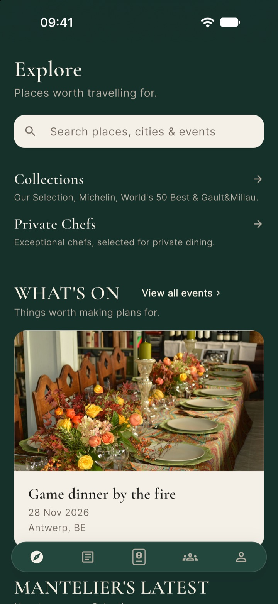
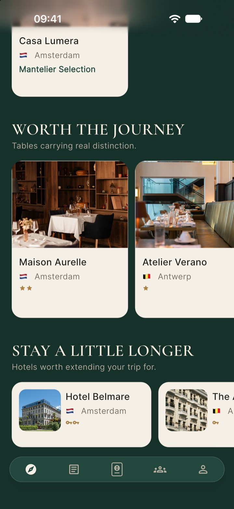
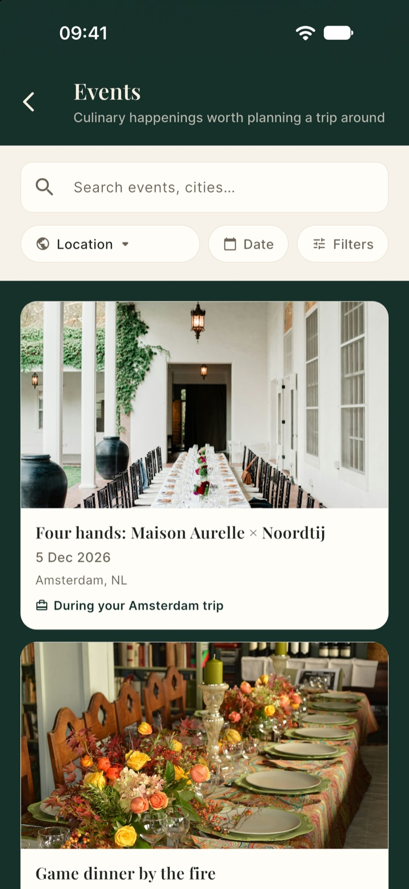
Your page
Your photos lead the page, in the order and framing you choose. Your description, opening hours, team and events sit beneath them, with direct links to your website and phone.
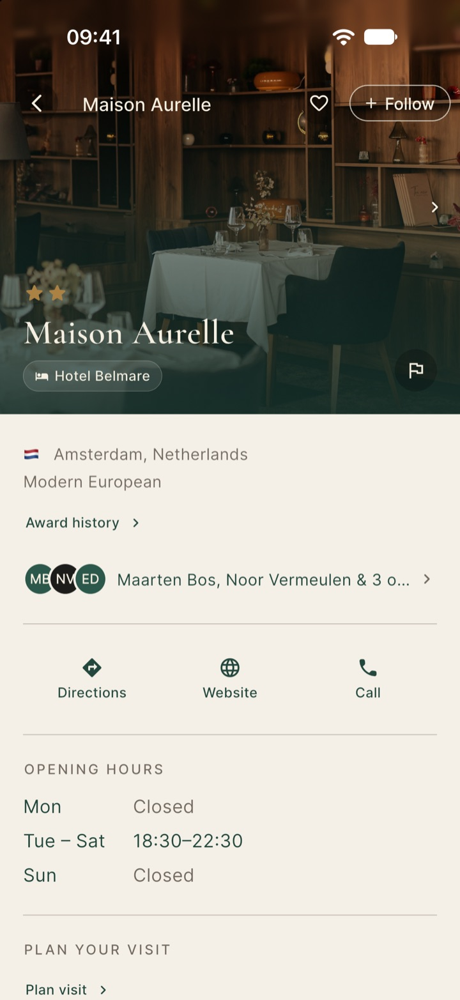
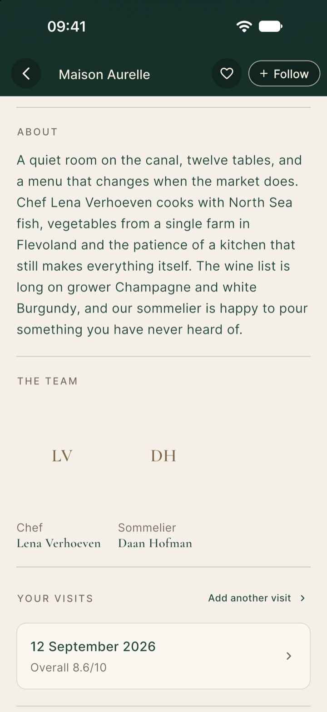
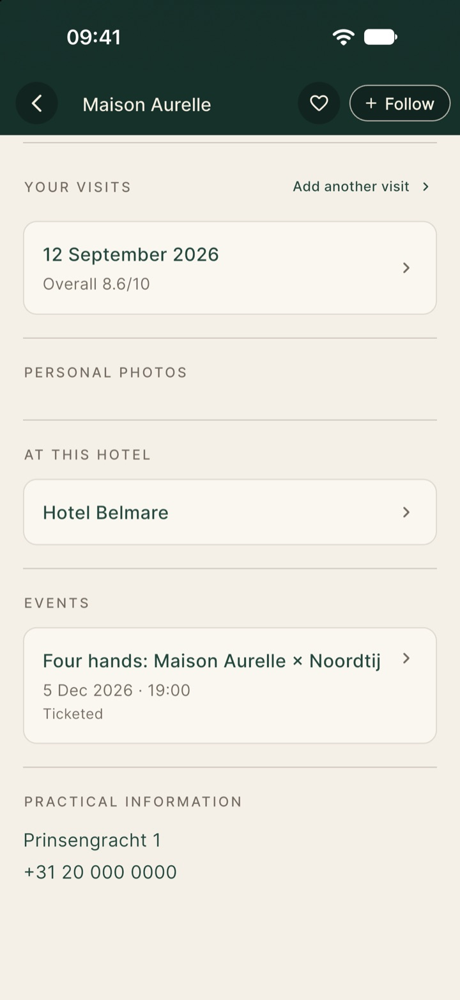
Events
A four-hands dinner, a winemaker's table, a gala. Each event gets its own page, links every venue and chef involved, and shows members which friends are going. Followers of the host hear about it when it goes live.
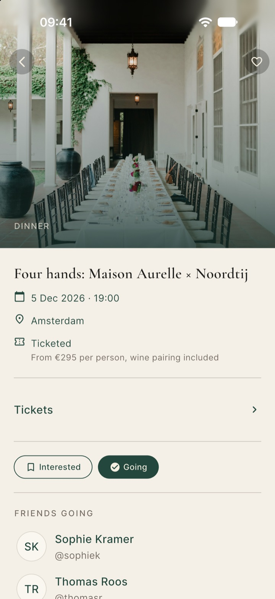
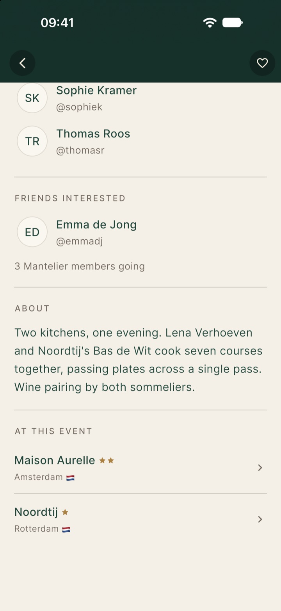
Hotels
Hotels have the same page with their own details. A hotel and its restaurant link to each other, so a member who finds one finds the other.
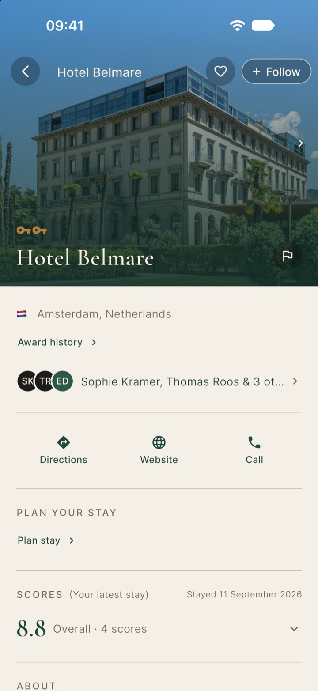
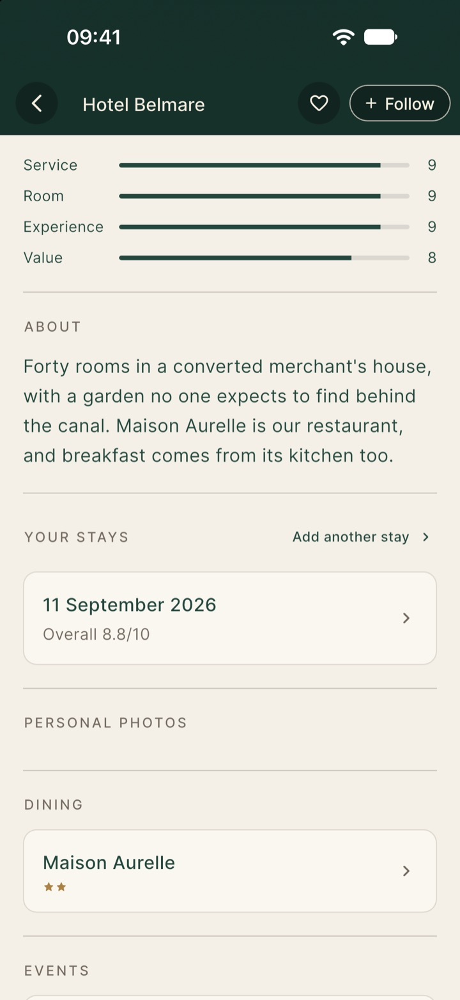
Plan
Members plan trips around tables. Your venue can sit in their itinerary and on their trip map, and your events surface when they match the dates.
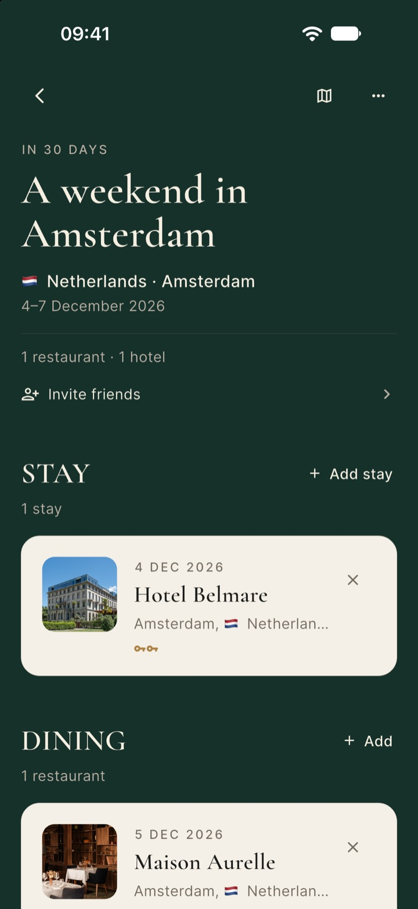
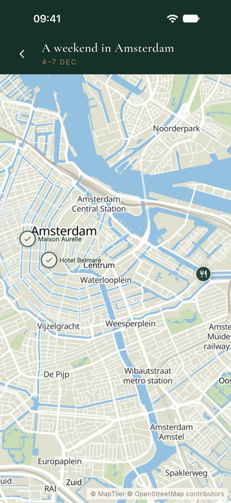
Remember
After a visit, your venue becomes a stamp in the member's Passport, kept for years and shared with friends if they choose. Their own ranking helps them remember and recommend.
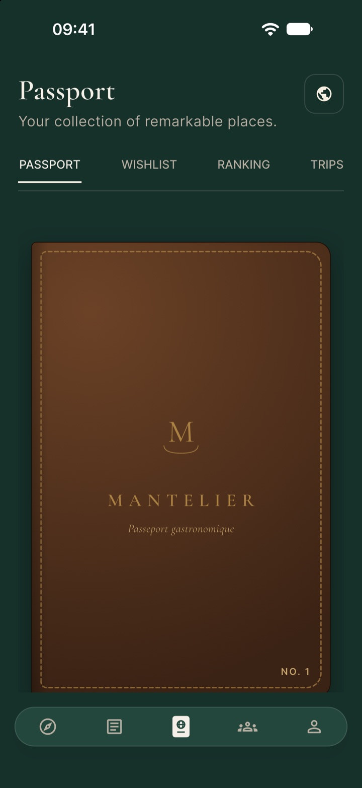
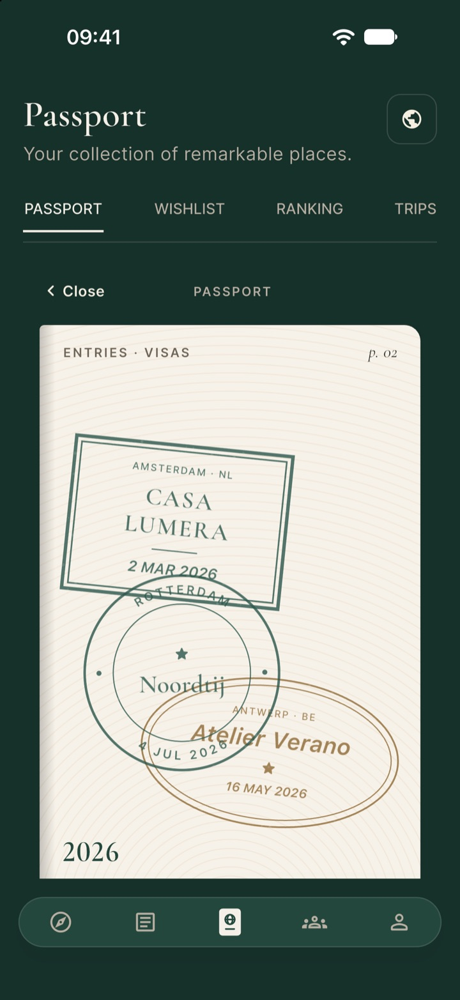
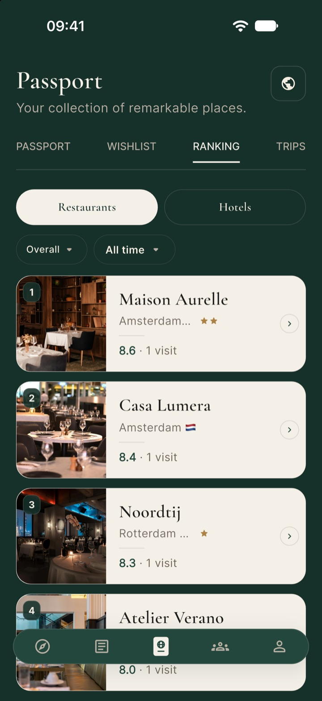
Community
Interviews and stories bring the people behind the table forward. Community shows what members rate highest and what's coming up.
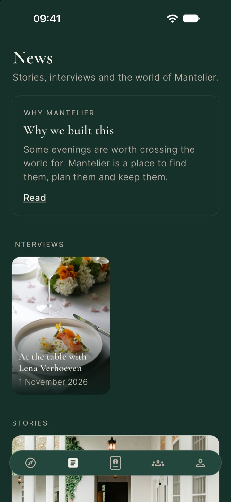
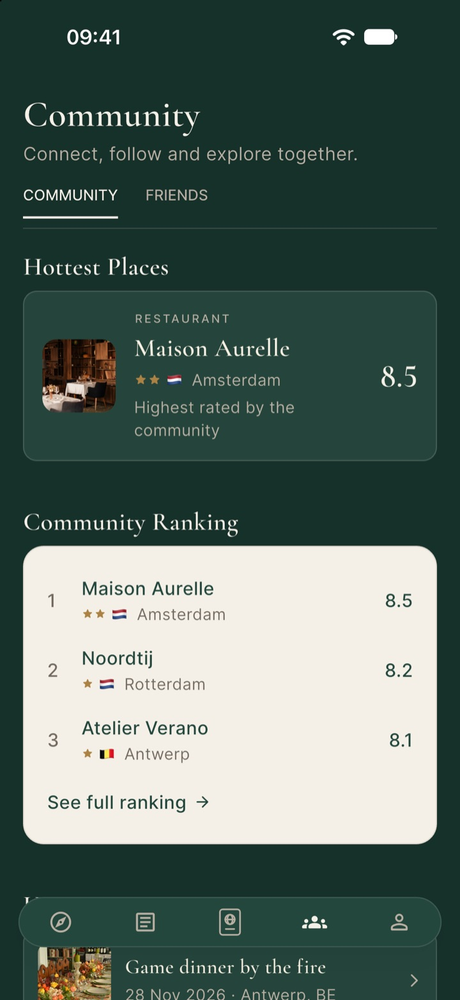
How it works
Want to see your own place like this? Write to claimedvenues@mantelier.app.